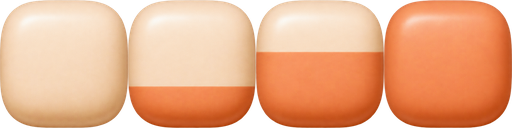

MALI POKRET. VELIKA NAGRADA.
S dvije strane.
U isti ruksak.
Kockice ispred i iza, ruksak u sredini.
Boja putuje istodobno s oba ruba prema ruksaku.
BACKPACK · DVA KRAKASPREMNO ZA PUNJENJE
0% NAPUNJENOSPACE = DODAJ PUNJENJE
PROVJERA U MALOM
Kako se čita u HUD-u?
Ista animacija, na širini iPhonea.
×1.525⚡ ×8
PNG PRIJEDLOG · ŠIRE I NIŽE
PNG materijal pločica.

0%30%60%100%
PNG prijedlog materijala. Animacija iznad koristi upravo ove PNG pločice.